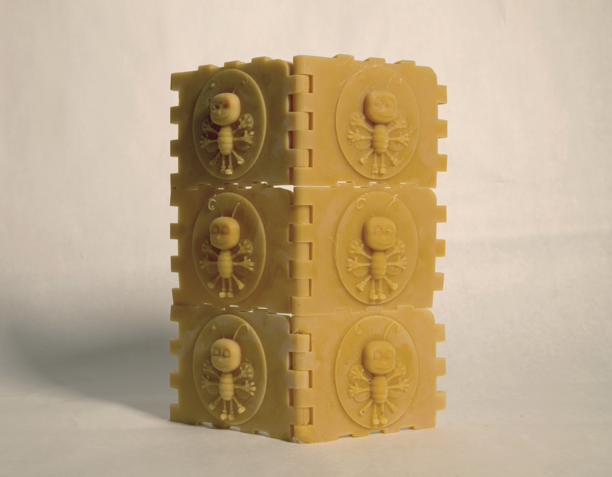

My name is Sam Agnew
My email is sam.c.agnew@gmail.com
This page is for my artwork
1. The video’s focus is the Pirelli Tire Building. The first section compares the social history of the building to the idealistic writings of its architect, Marcel Breuer. The second section montages the flowing motion of space in Pixar movies, intended to create a sense of Utopian wonder. The third section displays renderings of common-place words, clad in Pixar-inspired furs. The video is about the possibility of imaginary space versus its reality.
2. March 2020. The exhibit is encircled by a wall of tiny beeswax blocks. The insignia on each block resembles an anthropomorphized bee in the stance of Leonardo’s ‘Vitruvian Man’. Like how ‘Vitruvian Man’ signified an architecture of the male body, these ‘Vitruvian Bees’ signify an architecture of anthropomorphized bees.
4. April 2020. A bouldering performance took place atop a pair of 1,725LB ‘Verti-blocks’. ‘Verti-blocks’ are used to construct retaining walls which redistribute land. In the city, their backside is concealed with dirt while their front appears indistinguishable from natural stone. They manipulate physical space while reconstituting our material-perception of Nature. The climber experiences no sublime as he perpetually clambers over this ‘simulation of nature’, his actions fail to bring him anywhere other than the place he already knows.
5. I watched the commercial for David Lynch's Masterclass and he said you need 70 ideas to make a movie
7. April 2020. "Gatorade Vessel with Giant Squid" Laundry Basket, Pigmented Silicone Rubber, Gatorade (Glacier Freeze), 3D Print.